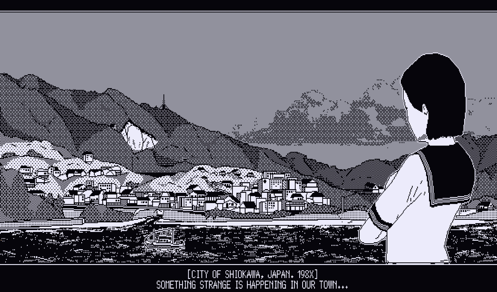
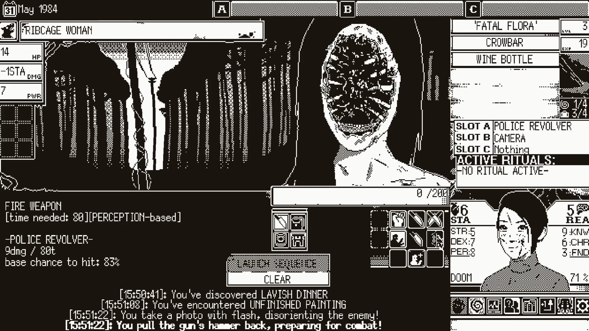

World of Horror
恐怖の世界
Publishing
- Developed by panstasz
- Published by ysbryd games
- Released for early access on February 20th, 2020
- Full Release on October 19th, 2023
Description
The Old Gods are reawakening, clawing their way back into a world that’s spiraling into madness. In hospitals, abandoned classrooms, quiet apartments, and dark forests, strange appearances and unexplainable phenomena test the sanity of residents in Shiokawa, Japan. Is it chaotic retribution, or the machinations of beings beyond our comprehension?
This is WORLD OF HORROR: The end of the world is nigh, and the only solution is to confront the terror reigning over the apocalypse. Navigate this hellish, roguelite reality through turn-based combat and unforgiving choices in this roguelite-style cosmic horror RPG.
Invoke dark rituals, uncover disturbing clues, and solve puzzles across multiple randomized mysteries. Each perplexing case unravels into a series of random encounters with nightmarish figures inspired by the works of horror legends Junji Ito and H.P. Lovecraft.
Game Categories
- Genre: Role Playing Game, Horror
- Perspective: First-Person
- Gameplay: Turn-Based Roguelike
- Singleplayer
Reviews
"World of Horror is the gross, little bump that you just can’t keep yourself from poking at and won’t be able to get off your mind."-- Lane Martin of CGMagazine on 3/5/2020
Score: 9.5/10
Full Review
"Sure, the game could explain its mechanical intricacies and combat systems a bit better, but this is still a work in progress. World Of Horror is overflowing with boogiemen that need a good thrashing, and I’m more than willing to keep dishing out exorcisms so that the folks of Shiokawa sleep a little easier."-- Unnamed of Indie Game Website on 2/19/2020
Score: Unscored
Full Review